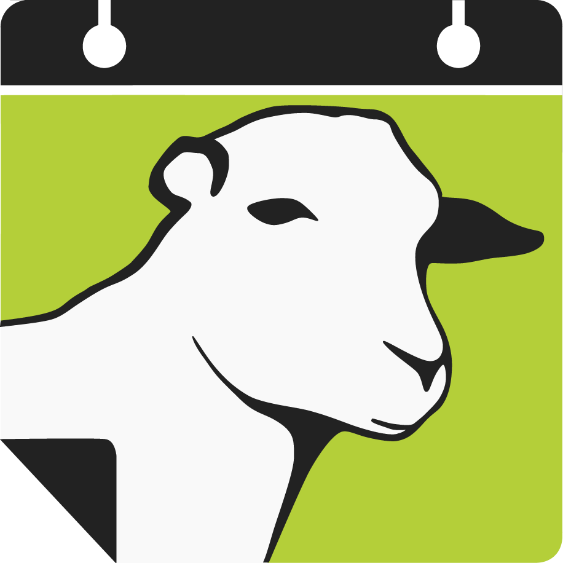
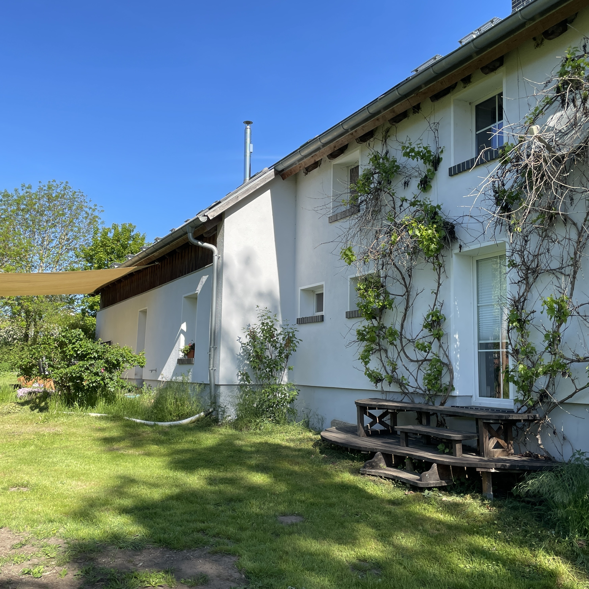
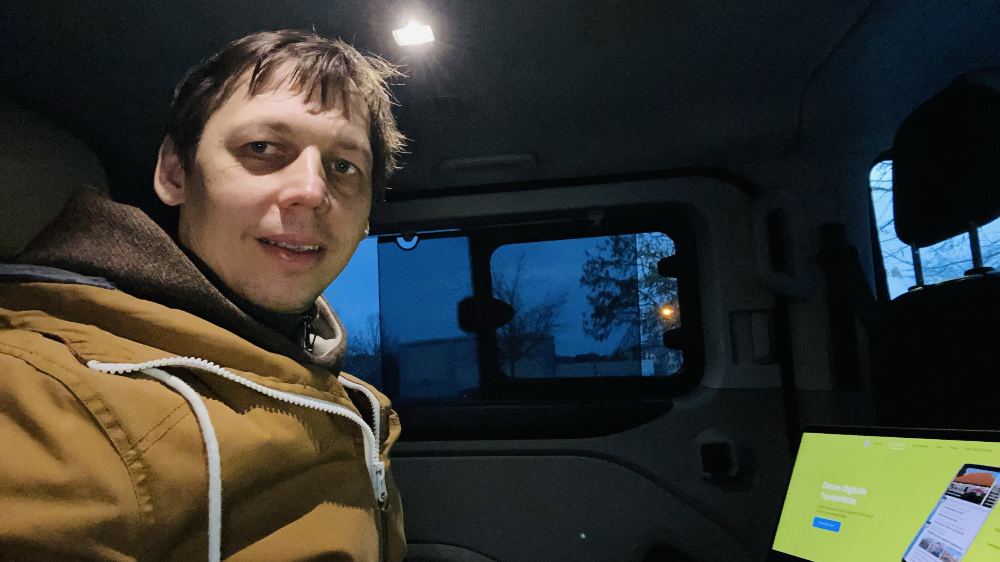
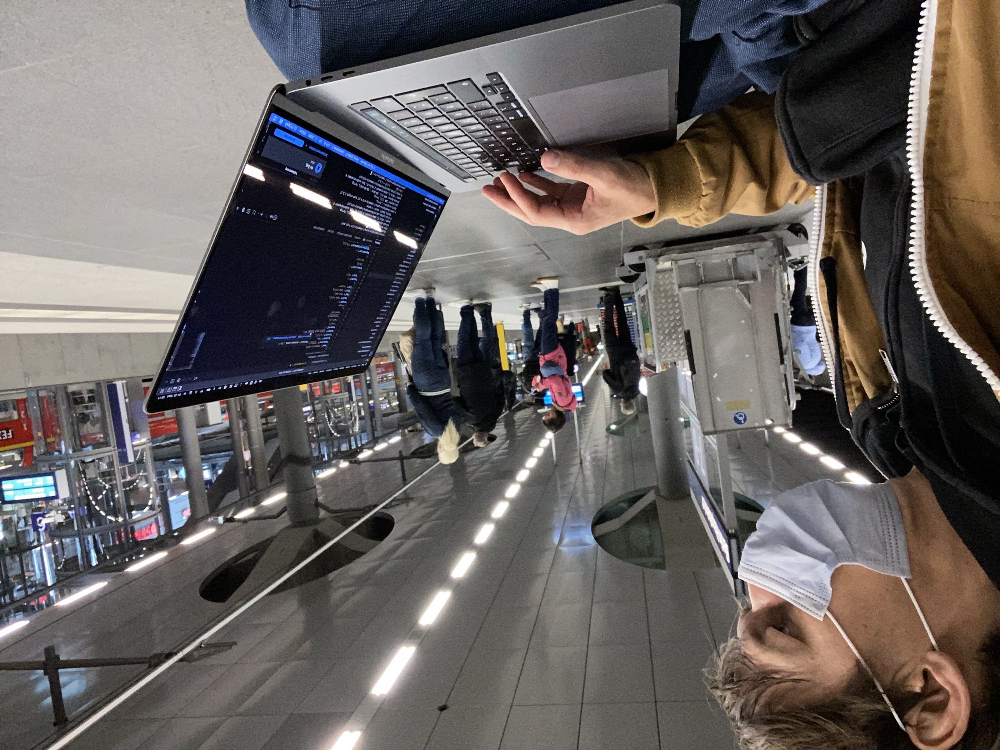

Schafe vorm Fenster
Inhalte sind echt (media-echo, proof, offerings) oder als Platzhalter markiert. Die Steuerung unten gehört nicht zur Website – sie simuliert, was die Seite über den Besucher weiß.

Schafe vormFenster
{{ heroTitle }}
{{ heroSub }}

{{ sc.body }}
{{ streamSub }}
Kennen wir. Deshalb führt von hier alles überall hin.
{{ place }}
Du könntest die Erste sein. Ein Termin genügt – der Kalender startet damit.
Auf den Homescreen legen – dann öffnet sich {{ place }} mit einem Tipp. Kostenlos, ohne Konto.
„Zum Home-Bildschirm"
„App installieren"
Ein Dorfkalender lebt nicht von zehn Veranstaltungen im Jahr, sondern von dem, was jede Woche passiert.
{{ v.story }}
Wer im Ort etwas organisiert, trägt es selbst ein – Verein, Feuerwehr, Kirche, Bäckerwagen.
Flyer abfotografieren, per WhatsApp schicken. Fertig.
Der Termin steht dann im Dorfkalender von {{ place }}, auf der Gemeinde-Website und bei allen, die den Kalender auf dem Handy haben. Heute tippt ihr ihn in sechs Kanäle – und die Hälfte des Ortes erfährt trotzdem nichts.
{{ exampleNote }}
Dauerhaft kostenlos für Vereine und Ehrenamt. Keine Kosten, keine Werbung.
Für welchen Ort tragt ihr ein?
Auch ein Ortsteil zählt – die Leute identifizieren sich mit dem Dorf, nicht mit der Gemeinde.
Ihr Veranstaltungskalender. Ihre Website. Ihr Name. Und im Amt tippt niemand mehr Termine ab.
Die Vereine, die Feuerwehr, der Bäckerwagen schicken ihre Termine per WhatsApp oder Kalender-Anbindung ein. Sie zeigen sie – gefiltert auf Ihre Orte, unter Ihrem Logo, auf Ihrer Seite. So macht es die Stiftung Lebendiges Lehre für 17 Orte.
Live-Vorschau, gefiltert auf {{ demoPlace }}. Design passt sich Ihrer Website an.
Für euren Ort ist er sowieso da. Ab dem Moment, in dem er unter Ihrem Namen laufen soll, kostet er etwas.
Lesen ohne Konto, eintragen nach einmaliger Anmeldung. Für immer – das haben wir 2022 öffentlich zugesagt.
Achtzig Orte lassen sich nicht redaktionell pflegen. Hier fragen die Leute „Was ist in meiner Nähe?" – über Gemeindegrenzen hinweg. Dafür gibt es die Karte.
Kein Tracking im Embed, Verarbeitung in Deutschland, dokumentierter KI-Einsatz beim Termin-Import.
Welche Orte gehören in Ihren Kalender?
Was Sie hier anhaken, sehen Ihre Besucher – und zwar schon jetzt in der Vorschau unten.
Achtzig Orte. Ein Kalender. Eine Karte. Und niemand muss sie füllen.
Im Landkreis fragt niemand „Was ist in Gemeinde X los?", sondern „Was ist in meiner Nähe?" – dreißig Kilometer weit, über Gemeindegrenzen hinweg. Eine chronologische Liste kann das nicht. Eine Karte schon.
Sie nennen uns Landkreis und Website, wir schicken Ihnen binnen zwei Werktagen ein Angebot mit Vorschau auf Ihr Gebiet.

Gebaut in einem Dorf, betrieben aus einem Dorf.
Ein Ort mit vierhundert Einwohnern kann sich keinen Dienst leisten, der einen Vertriebler braucht. Deshalb ist der Dorfkalender kostenlos und bleibt es – und deshalb kostet Portalize 480 € statt eines Projektbudgets.
Der Gründer war ehrenamtlicher Bürgermeister der Gemeinde, in der der Kalender startete.
Presse, Auszeichnungen, Förderungen und Auftritte seit 2018 – für Presse und Förderer, die es suchen.
